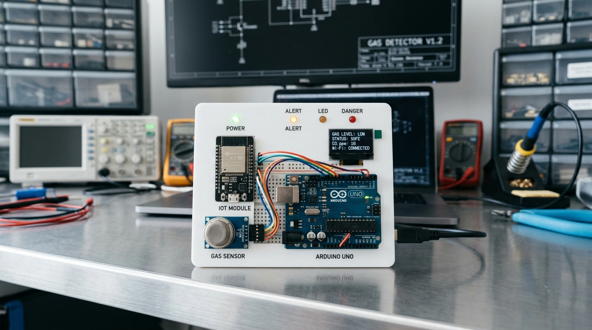
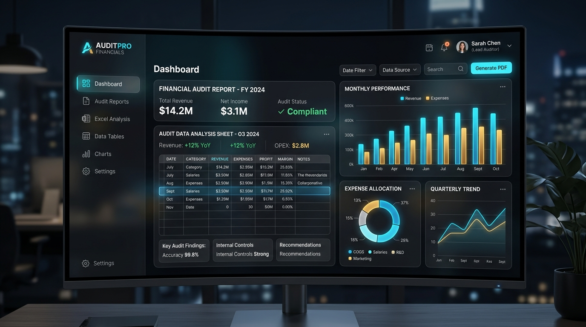

Network Engineering Student | Engineer's Discipline, Auditor's Eye for Detail.
Menggabungkan kedisiplinan teknik jaringan dengan ketelitian audit keuangan.
Mahasiswa D4 Multimedia Network Engineer, Politeknik Negeri Jakarta (semester 3), dengan ketertarikan lintas disiplin: network infrastructure, cybersecurity, multimedia, hingga finance, akuntansi, audit, dan business development.
Saya senang memecahkan masalah dan cepat beradaptasi di lingkungan baru — baik saat menangani konfigurasi teknis maupun menganalisis data dan keuangan. Rasa ingin tahu yang luas ini saya jadikan modal untuk terus berkembang di berbagai arah karir yang relevan.
Pengalaman profesional teknis, audit, layanan pelanggan, dan pengabdian masyarakat.
6 Proyek unggulan meliputi Networking, IoT, Audit Keuangan, Multimedia, dan Edukasi Sosial.
Merancang & mengkonfigurasi topologi jaringan skala kantor/area luas dengan Cisco Packet Tracer & Mikrotik (Routing, Switching, Subnetting).

IoT & HardwareMembangun perangkat pendeteksi gas berbasis IoT, mencakup perakitan sensor MQ-2, pemrograman mikrokontroler Arduino, dan sistem deteksi.
Merancang program edukasi pemanfaatan teknologi berbasis nilai Pancasila untuk siswa SMK di Jakarta guna meningkatkan nilai kebangsaan digital.
Memproduksi video hiburan secara independen, mulai dari perencanaan konsep, shooting, editing, color grading, hingga motion graphics.

Finance & AuditPemeriksaan dokumen transaksi, verifikasi laporan keuangan, dan penyusunan kertas kerja audit untuk klien PT di KAP Wibisono dan Rekan.
Program pengabdian masyarakat gotong royong pembersihan & perawatan rumah ibadah gratis bersama Paguyuban Pekerja Pertamina Gas Negara.
Kompetensi teknis jaringan, cybersecurity, multimedia, akuntansi, hingga soft skills.
Silakan kirimkan pesan, tawaran kolaborasi, atau diskusi proyek melalui formulir ini atau langsung melalui media sosial & nomor kontak resmi saya.